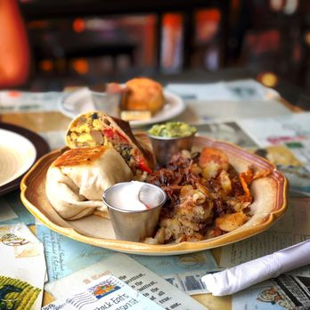

Short Stack Eatary
One of my favorite brunch places in Madison is Short Stack. The location of the restaurant makes it very convinient and the hours of the restaurant are very accomodating. My go-to order is the trio with scrambeled, potatoes and sourdough toast. They have options for everyone at any time of the day to always keep you satisfied.
